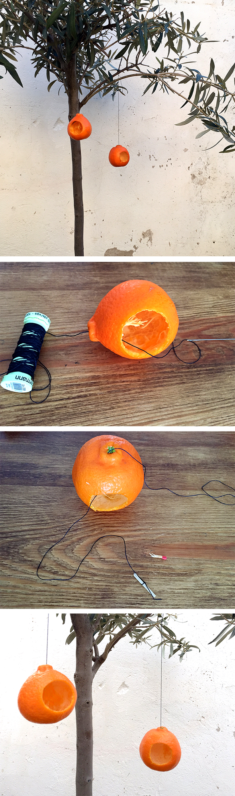

Inicio›Blog›Material›Casa de mandarinaMaterial · Fruta · Invierno · AnimalCasa de mandarina12 enero, 2016 A partir de una mandarina hacemos una cabaña para alpiste. Hannah muestra en nuestro video cómo se vacía. ← DecoraciónMarcapáginas →